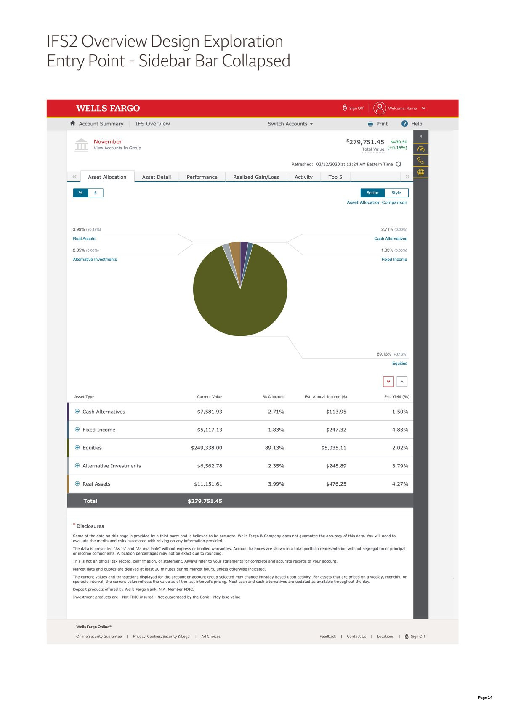
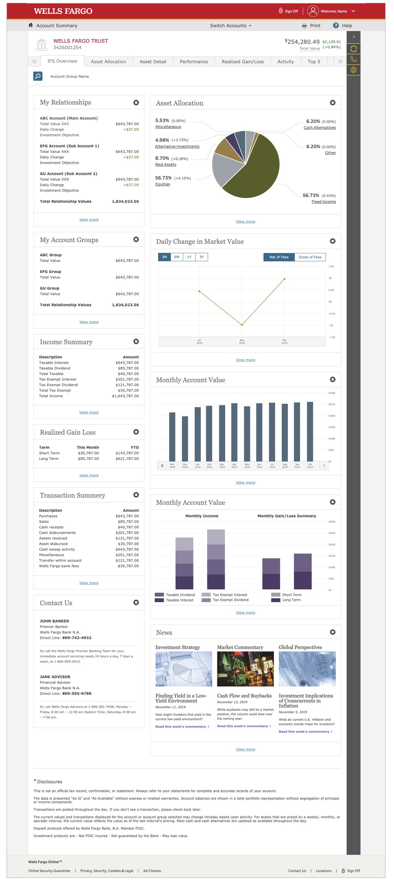

Recognition · Wells Fargo
Two-time Accessibility Champion
Recognized twice by Wells Fargo for advancing accessible design practices and WCAG standards across teams.
Wells Fargo's Accessibility Champion recognition is awarded to employees who go beyond their day-to-day role to advance accessible, Web Content Accessibility Guidelines (WCAG)-compliant design practices across the organization. I was recognized with this distinction twice, for two different pieces of work described below.
Rebuilding an accessible color palette for capital markets charts
Discovered June 2020 · Remedied December 2020
In 2020, WCAG and accessibility standards for Trust Services and IFS started getting real attention across the organization for the first time. One of the first places I noticed a problem was in the charts, specifically pie charts where adjacent color segments had no divider line between them and were genuinely hard to tell apart. The palette behind them was easily ten years old, originally pulled from Capital Market Assumptions data and assigned internally, with more than 100 distinct hex values mapped to categories like miscellaneous, cash alternatives, other, alternative investments, real assets, equities, and fixed income. Those colors needed to be distinguishable both with and without a white divider line between segments, and they weren't.
Confidentiality Notice: Visuals have been recreated using AI to protect confidential information while accurately representing my design work.

The asset allocation pie chart, adjacent segments with no divider line, exactly the pattern that made the colors hard to differentiate.

The broader IFS Overview dashboard, the same color palette repeated across every chart on the page.
Monthly Account Value charts had the same underlying issue: when colors weren't differentiated enough, the chart failed to meet the accessibility standards that were clearly on their way.
My process started with partnering with an accessibility SME and building a spreadsheet where I could lay every color out next to its neighbors, hex value included, so the SME could quickly scan and test each pairing for contrast and differentiation. I'll admit Excel isn't usually my strong suit, but I figured out how to make it work. That spreadsheet became the foundation for an entirely new color palette, one that replaced the decade-old Capital Market Assumptions colors across every chart in the Trust Services experience.
A new, fully accessible color palette for capital markets charts, built pairing by pairing with an accessibility SME rather than guessed at, then taken through my leadership and our dev partner stakeholders for funding and implementation.
Fixing link contrast in Private Bank
Discovered February 2021 · Remedied July 2021
My second Accessibility Champion recognition grew out of work maintaining the Private Bank pages within IFS Trust Services. Private Bank mirrored the broader IFS experience but ran on its own brand palette, a color system unique to interfaces serving ultra-high-net-worth clients. I took ownership of keeping those pages current as IFS Trust Services continued to evolve.
Around that same time, a growing personal focus on accessibility led me to a simple but important realization: internal-facing standards for our own team members, from relationship managers to customer service, weren't getting the same accessibility scrutiny as customer-facing experiences. Looking closely at the Private Bank palette specifically, I noticed one of its core blues, the color used across links and URLs, didn't look like it would meet WCAG contrast standards. I checked. It didn't.
Before treating it as a confirmed problem, I got approval from leadership to formally audit the issue. That meant looping in accessibility SMEs already familiar with Trust Services, and scoping a full, end-to-end audit of everywhere that specific hex value appeared, whether in print or in on-screen link styling. Once I had funding and approval, I brought on a visual designer to lead that audit and compile documentation we could bring to every stakeholder who needed awareness of it, from developers through our most senior stakeholders.
The audit turned up more than 120 instances of that color across Private Bank. Rather than sitting on that finding, I socialized it up through every level of leadership it touched. With their go-ahead, and in concert with our dev partners, we darkened the URL link color as an interim fix, buying time for the team responsible for Private Bank's brand and color palette to formally review it. The ultimate resolution went further than a contrast tweak: that blue was eliminated from the palette altogether and replaced with an indigo, resolved as part of a broader review and adoption of updated Private Bank brand standards.
View your account details and recent transactions from your dashboard.
View your account details and recent transactions from your dashboard.
Same link, same page, side by side. One nearly disappears against white; the other is unmistakably a link.
What mattered most to me about this one wasn't just catching the issue, it was pushing it forward the right way: getting leadership involved early, socializing the finding rather than sitting on it, and bringing in a dedicated resource for two weeks to fully document every instance where the color failed to meet WCAG standards. That documentation gave our dev partners exactly what they needed to implement the fix cleanly, while the brand team used the same window to review and modify the wider Private Bank brand standards it was part of.